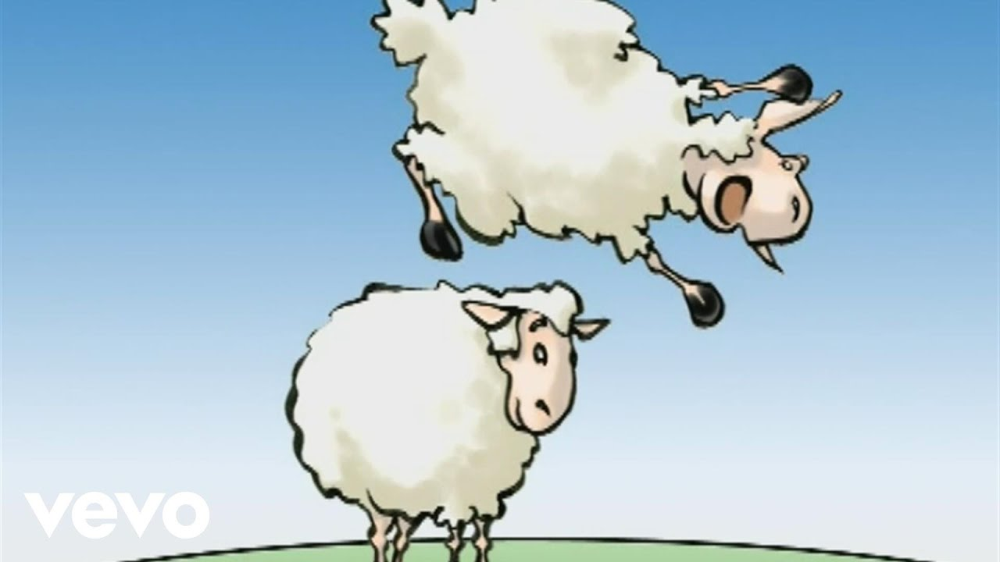
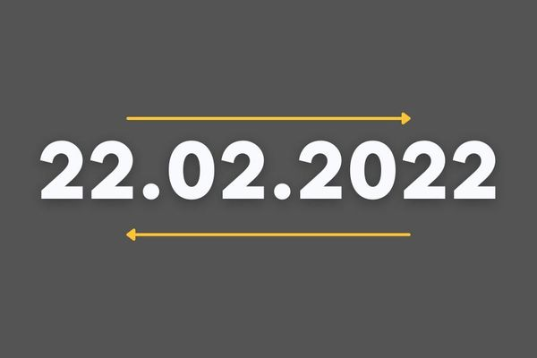

La Bataille Navale
Le dernier projet que j'ai effectué est une bataille navale en langage Python, en collaboration avec Evan Collet, un camarade de classe. On joue contre l'ordinateur qui place les bateaux aléatoirement dans une grille de 5x5. Le but de l'utilisateur est de détruire les bateaux. Le jeu n'est pas accompagné par une interface graphique, on y joue donc sur console
Cliquez ici pour télécharger le fichier
____________________________________________________________________________________________________________________________________________________________
Le Saute-Mouton
Ce Projet est un jeu de Saute-Mouton, sans interface graphique (on y joue directement sur la console), où nous avons 6 moutons à déplacer sur 7 cases. Le but est simple: il faut que les moutons de gauche aillent à droite et que ceux de droites aillent à gauche. La difficulté est de ne pas rester bloquer: on ne peut sauter qu'une case et il faut que la case d'après soit vide: c'est un véritable casse-tête. Ce projet a été effectué avec Titouan Dano, un camarade de classe.
Cliquez ici pour télécharger le fichier

____________________________________________________________________________________________________________________________________________________________
Le Palindrome
Ce Projet n'est pas un jeu, mais un programme permettant de determiner si un mot donné par l'utilisateur est un palindrome (un mot qui se lit à l'envers comme on peut le lire à l'endroit.). Ce programme n'a pas d'interface graphique non plus, on interagit directement avec l'invite de commandes. J'ai réalisé ce projet seul.
Cliquez ici pour télécharger le fichier

____________________________________________________________________________________________________________________________________________________________
Le générateur de mot de passe
Ce Projet n'est pas non plus un jeu, mais un outil permettant de générer un mot de passe, l'utilisateur rentre le nombre de caractère du mot de passe, puis, peut choisir entre 3 niveaux de sécurité: niveau 1, des lettres en minuscules/majuscules, niveeau 2, le niveau 1 avec des chiffres, et le niveau 3, le niveau 2 mais avec des caractères spéciaux en plus. C'est donc un bon moyen d'éviter de créer des mots de passe trop faible. Ce programme n'a pas d'interface graphique non plus, on interagit directement avec l'invite de commandes. J'ai réalisé ce projet seul.
Cliquez ici pour télécharger le fichier